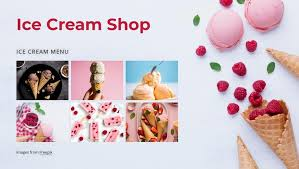
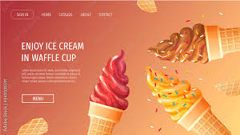

Welcome to sweet scoops Ice Cream parlour
Indulge in the sweetest treats around!
About Us
Welcome to sweet scoops Ice Cream, where nature meets indulgence. Founded in 2015, sweet scoops is dedicated to crafting organic, artisanal ice cream that’s as good for the planet as it is for your taste buds. Our journey started with a simple goal: to create ice cream using only natural, organic ingredients, free from artificial flavors and preservatives. We partner with local farmers and producers to source the freshest dairy, fruits, and other ingredients, ensuring that every scoop is bursting with real flavor. From our organic vanilla bean to seasonal specials like strawberry basil, our flavors are inspired by the beauty and bounty of nature. Our eco-friendly shop is designed with sustainability in mind, featuring compostable cups and spoons, and a commitment to reducing waste. Join us at sweet sweetscoops Ice Cream, and savor the difference that comes from pure, honest ingredients. We can’t ait to share our passion with you!
Our Flavors
Explore our wide variety of delicious ice cream flavors!
Contact Us
share your thoughts
Whether you have questions, feedback, or just want to say hello, feel free to reach out.
Get in touch
Got a question, a flavor suggestion, or just want to share your ice cream selfies? We’re all ears!
connect online
acebook: facebook.com/scoopology Instagram: @scoopology Twitter: [@scoopology]